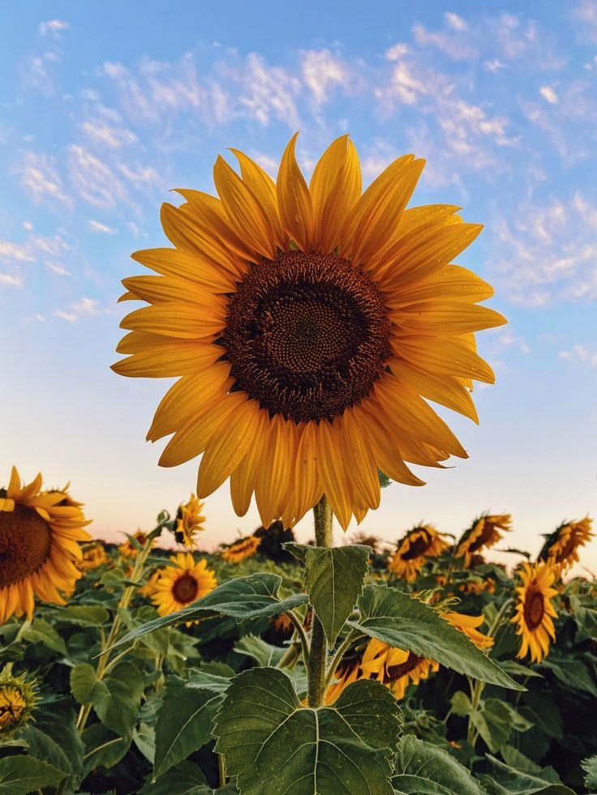

Harimau

Bunga matahari adalah tumbuhan yang terkenal karena kepala bunga yang besar dan selalu mengikuti matahari. Mereka termasuk dalam keluarga Asteraceae dan biasanya ditanam sebagai tanaman hias atau untuk biji bijiannya yang dapat dimakan.
Bunga matahari memiliki bunga-bunga besar dengan daun hijau besar yang mampu menyerap cahaya matahari dengan efisien. Mereka sering kali tumbuh di daerah yang terbuka dan cerah serta membutuhkan banyak sinar matahari untuk pertumbuhan yang optimal.
Untuk informasi lebih lanjut tentang bunga matahari, Anda dapat mengunjungi halaman Wikipedia tentang Bunga Matahari.